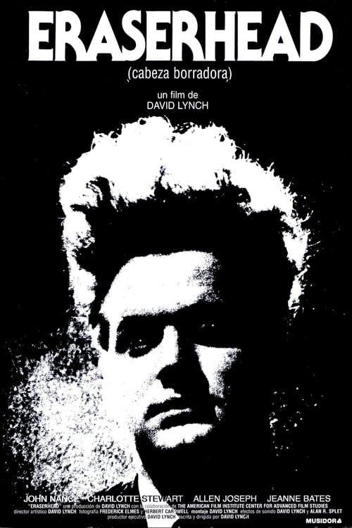

Cabeza borradora (1977)
Sinopsis Rápida
¿Qué pasaría si tuvieras un bebé reptil? Henry Spencer lo descubre de la peor manera posible, enfrentándose a una paternidad inesperada y surrealista en medio del caos y la hilaridad.
Sinopsis Detallada
En 'Cabeza borradora', Henry Spencer se ve envuelto en una situación completamente fuera de lo común: la llegada de un bebé... ¡reptil! El caos y la comedia se desatan cuando Henry intenta lidiar con las travesuras de su peculiar hijo, mientras su novia huye despavorida. La película explora de forma divertida y alocada los temas de la paternidad soltera y la aceptación de lo diferente, presentando un tono irreverente y situaciones tan extrañas como memorables. La cinta se convierte en un torbellino de situaciones inesperadas donde Henry debe demostrar su fortaleza ante desafíos inimaginables.
¿Por qué tenés que verla?
- Una comedia hilarante con una premisa única y descabellada que te dejará sin aliento.
- La película explora el tema de la paternidad desde una perspectiva totalmente inesperada y original.
- A pesar de su poca difusión, 'Cabeza borradora' ha ganado estatus de película de culto entre los amantes del cine bizarro.
- Un ejemplo perfecto de comedia que no teme jugar con lo absurdo y lo grotesco.
Idea Extra
Análisis de las influencias culturales y cinematográficas en 'Cabeza borradora', comparándola con otras películas de comedia bizarra de la década de 1970.
{{CONTENIDO_RELACIONADO}}